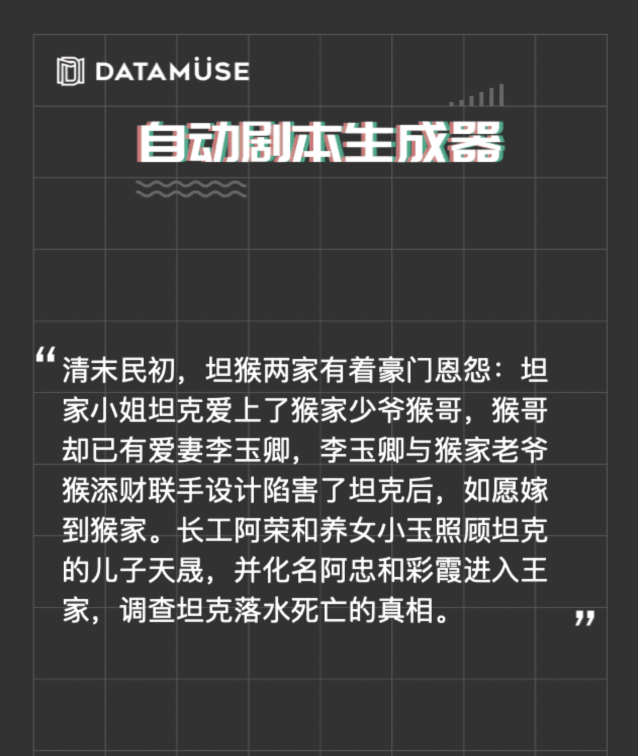
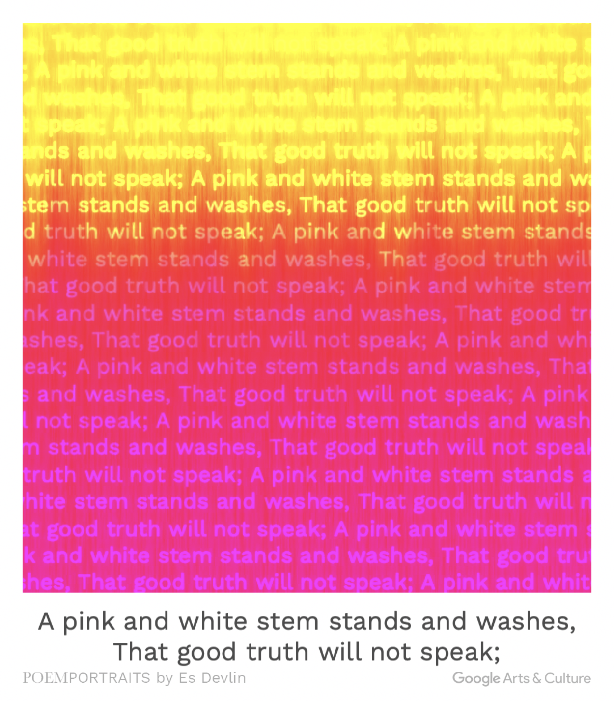

Return
These two peices of writing made by an AI writer are both interesting, but they are both rigid and followed a fixed function. They are made by artsexperiments.poemportraits, datamuse.quokr
 